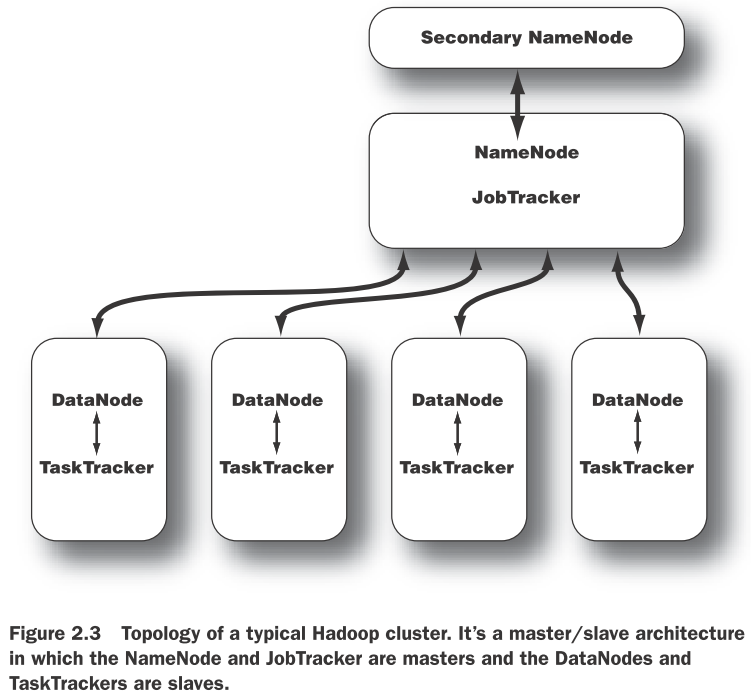

Hadoop In Action 笔记
MapReduce
MapRecuce程序执行的2个阶段，分别称为mapping和reducing。每个阶段都定义了数据处理函数，这些函数被称为mapper和reducer。在mapping阶段，MapReduce接收输入并将这些数据分别发送给mapper。在reducing阶段，reducer处理所有来自于mapper的输出并产生最终结果。简单来说mapper对输入进行过滤和转换（filter and transform）成reducer可以聚合（aggregate）的东西。 除mapping和reducing外还需要处理数据的分割和传送。但它们与mapper和reducer不同，它们通常与特定的数据处理过程无关。MapReduce框架提供了能满足于大多数情况下的缺省实现。 为便于处理需要一种足够强大的通用的数据结构。MapReduce使用list和pair(key/value)作为主要的数据结构。 MapReduce框架的数据处理过程：
- 应用程序的输入必须被构建成包含pair（key/value）的list，list(k1,v1)。处理多个文件的输入格式通常为
list(<String filename, String file_content>)。处理单个大文件的格式可能是list(<Integer line_number, String log_event>)。 - list(k1,v1)被分散为
- 所有mapper的输出被聚合到一个巨大（概念上）的list
Hadoop的构成
NameNode
Hadoop最重要的守护进程——NameNode。Hadoop的分布式存储和分布式计算都使采用了主/从架构。分布式存储系统称为HDFS。NameNode是HDFS中的“主”，它控制DataNode（“从”）执行低级别的IO任务。NameNode记录了文件是如何打碎成块的，哪个节点存储了这些块，并记录下了整个分布式文件系统的健康状况。 NameNode的功能是内存和IO消耗型的。因此，作为NameNode的服务器通常不存储用户数据和执行MapReduce程序的。这意味着NameNode服务不会同时作为DataNode或TaskTracker。 NameNode的重要性也导致了它是Hadoop集群的SPOF（single point of failure）。其它节点出现故障，Hadoop集群都可以正常工作，你也可以对快速的故障点进行重启。但是NameNode不行。
DataNode
集群中的每个“从”机器都会运行DataNode守护进程以执行分布式文件系统的任务——读取和写入HDFS块到其本地文件系统的文件中。当你读写HDFS文件时，NameNode告诉客户端哪个DataNode保存了这些文件块。客户端直接与这些DataNode进程通讯以读取这些块。DataNode之间也可以进行通讯，以进行数据块的冗余备份。 DataNode会不断的向NameNode报告它的情况，比如在初始化时，每个DataNode都会告诉NameNode它们当前所存储的块。这个过程结束后，DataNode会持续向NameNode提供本地的变化信息如：从本地磁盘中创建、移动或删除数据块。
Secondary NameNode
SNN是用于监控HDFS集群状态的辅助进程。与NameNode类似，每个集群都有一个SNN，通常它在独立的服务器上运行。没有DataNode或TaskTracker进程一同运行在这个服务器上。SNN与NameNode不同，它不接收HDFS数据块的实时变化信息。而是与NameNode通讯，按集群配置文件所定义的时间间隔获取HDFS元数据的快照。 如NameNode一节所介绍的，NameNode是Hadoop集群的SPOF，SNN快照能帮助我们最小化停机时间和丢失数据。但是，NameNode故障仍然会需要人工干预来将一个SNN配置为主NameNode。
JobTracker
JobTracker进程是联络应用程序和Haddoop的。当提交代码到集群中时，JobTracker会通根据要处理的文件决定执行计划，它给节点分配不同的任务，监控任务的执行。任务失败时，JobTracker会尽可能在另一节点上重启这个任务，直至达到所配置的重试次数限制。 每个Hadoop集群只有一个JobTracker。它通常运行在集群中某个作为主节点的服务器上。
TaskTracker
与存储进程结构类似，计算进程也是使用了主/从架构：JobTracker是主，监督所有MapReduce任务，TaskTrackers管理各个任务在各从节点上的执行。 每个TaskTracker负责执行JobTacker分配给它的各项任务。尽管每个从节点都只有一个TaskTracker，但是每个TaskTracker可以派生出多个JVM进程来并行处理多个map或reduce任务。 TaskTracker的另一个职责是与JobTracker通讯。如果JobTracker在指定的时间内接收不到来自于TaskTracker的心跳信号，它将会认为这个TaskTracker已经崩溃，它会将对应的任务分配给集群的其它节点。

Hadoop组件
文件操作
- hdfs相关的操作命令-get -cat -ls -lsr -tail -rm -put -mkdir......
- 使用Configuration，FileSystem，FSDataOutputStream，FSDataInputStream对象操作HDFS或者本地文件。
MapReduce程序解析
- Hadoop数据类型——Writable接口类型的可以作为值，WritableComparable
类型的可以作为键或值。Hadoop预定义了常用数据类型的WritableComparable封装类。 - Mapper——需要实现Mapper接口并继承自MapReduceBase类。MapReduceBase是mapper和reducer的基类。它的configure和close方法分别作为对象的构造器和销毁器。Mapper处理数据的方法为map方法。
- Reducer——需要继承MapReduceBase类。它同样有configure和close方法。它还需要实现Reducer接口的reduce方法来处理数据。
- Partitioner——将Mapper输出重定向。它可以将Mapper的输出定向到不同的reducer。Hadoop默认的策略是根据key/value对中key的hash值决定它的reducer，这个Partitioner是HashPartitioner。
- 自定义的partioner只需要实现configure()和getPartition()这2个函数。前者被Hadoop job来配置partioner，后者返回一个介于0和reduce任务数量之间的数，它标明了pair将被要发送至的reducer的索引。
- 在map和reduce阶段之间，MapReduce程序还需要将mapper任务的输出分发给大量的reducer任务。这个处理过程称为shuffling，单个节点上的mapper的输出有可能会被发送到集群中多个reducer节点。
- Combiner——本地reduce。在许多MapReduce应用中，我们可能会需要在分发mapper结果前执行"local reduce“。即将mapper结果中拥有相同key的内容进行合并。比如word count中，某个job包含了"the" 574，更为有效的存储和传送方式应该是传递("the", 574)而不是传递574次("the", 1)。
读取和写入
输入数据通常是很大的文件通常是十几G或上百G甚至更大。MapReduce将这些输入数据分割成块（chunks）。然后在多台机器上并行的处理这些块。Hadoop里称这些块为input splits。每个块应的粒度应该小到足够并行处理。而又不能太小，而导致启动和停止job的时间还长一些。
-
InputFormat。Hadoop分割和读取文件是由InputFormat接口定义的。TextInputFormat是InputFormat的默认实现。其它实现有：
- TextInputFormat文本文件中的每行作为一条记录，Key是行的偏移位置。Value是行内容。
- KeyValueTextInputFormat每行一条记录。第一个分隔符，分割每行。牌分隔符之前的内容作为Key，其它内容作为Value。分隔符由key.value.separator.in.input.line属性决定，默认为tab字符。
- SequenceFileInputFormat
- NLineInputFormat与TextInputFormat类似，但它是按N行来分割的。mapred.line.input.format.linespermap属性决定按多少行来分割，默认为1。
-
OutputFormat。MapReduce使用OutputFormat类将数据输出至文件。输出内容不需要分割，每个reducer将它的输出写入自己的文件中。输出的文件被写入一个共同的目录中通常被命名为part-nnnnn，nnnnn是写入这个文件的reducer的partition ID。Hadoop提供的几种OutputFormat：
- TextOutputFormat
- SequenceFileOutputFormat
- NullOutputFormat
- TextOutputFormat
编写MapReduce程序
- 基本的MapReduce程序包含Mapper类、Reducer类、Job类。
- MapReduce程序通常很小。可以构建出一个程序模板，其它程序从这个模板基础上修改就可以了。
- IntWritable通常比Text性能更好。使用它的set方法，可以避免new大量的对象。
- 可以通过添加combiner来提升性能。
- 运用Streaming可以直接用其它脚本语言甚至是Unix命令编写MapReduce程序。Streaming使用Unix流来与其它程序交互。程序可以从STDIN获取输入，向STDOUT进行输出。数据都被当作文本处理，每行作为一条记录。
高级MapReduce程序
MapReduce链
- 顺序执行的任务链类似于Unix管道，它只需要将多个mapreduce任务按顺序执行，将上一任务的输出作为下一任务的输入。
- 具有复杂依赖关系的MapReduce任务，即任务是非线性执行的。Hadoop通过Job和JobControl这两个类来管理依赖。Job用于描述MapReduce任务，使用Job.addDependingJob()方法来指定它依赖的任务。然后通过JobControl的addJob()方法将所有job和依赖关系添加进来，并执行它的run()方法。JobControl也提供了类似于allFinished()和getFailedJobs()方法跟踪执行情况。
- 一些数据处理任务需要处理面向记录的前置和后置处理过程。可以编写单独的MapReduce任务来处理这些前置或后置步骤，并使用IdentityReducer（或者无reducer）将这些步骤链在一起。这种方法在处理任务链中消耗I/O和存储作为中间结果的步骤时效率低下。另一种方法是编写自己的mapper来处理